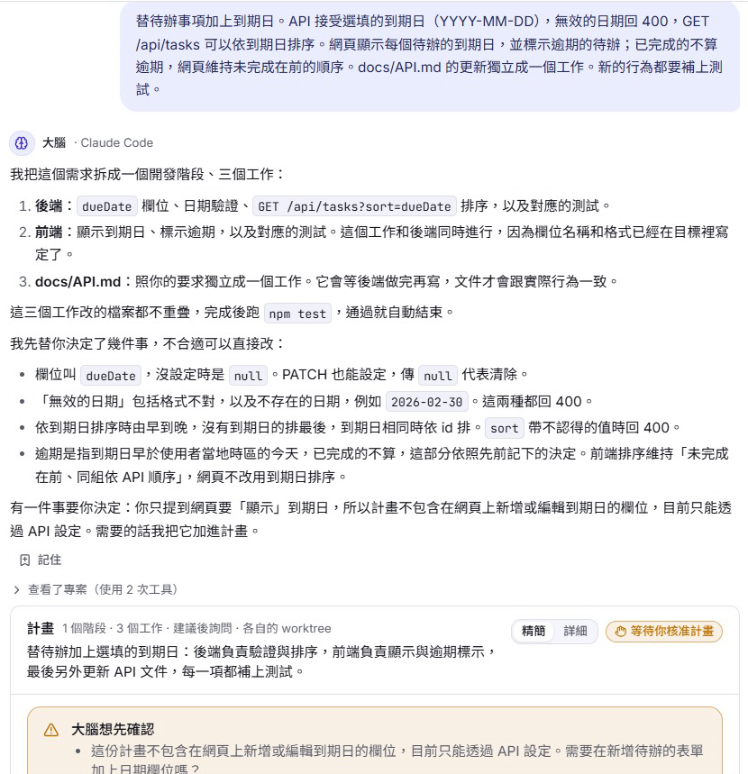
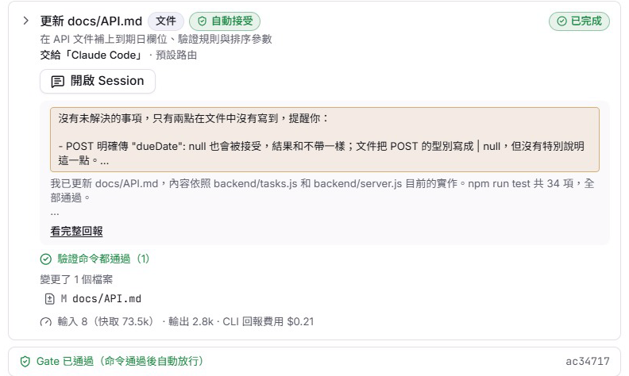

一段對話，
多個 Agent。讓 Claude Code 與 Codex 分工的 Windows App
不只是同時開好幾個 Session。把要做的事說一次，Pyloxa 擬好計畫，把工作分給 Claude Code 與 Codex，自己跑你的測試再交給你合併。
或登入，免費試用 Pro 預覽 →- Windows 原生，不需要 WSL
- 用你自己的訂閱
- 不碰 CLI 的登入憑證
- 介面有九種語言
這些是 Pyloxa 的範例規則。規則由你自己寫，每個工作都會標出它命中的規則。
運作方式
先說你想做什麼。

再核准計畫。

最後合併通過的成果。
- Adocs/api/profile.yaml
- Aserver/src/routes/profile.ts
- Aweb/src/pages/Profile.tsx
- Atest/profile.test.ts
- Atest/contract.test.ts
一個工作流程，五個段落
App 的「工作流程」頁一次看完整個流程：誰來規劃、分成哪些階段、誰做哪一種工作、怎麼檢查、怎麼交付。每一段都是你的設定，大腦只負責提計畫，不能改動它們。
規劃：誰當大腦、要放手多少
任何一個 Profile 都能當大腦，負責讀專案和拆計畫；大腦和執行工作的 Agent 可以用不同的模型。
- Profile 決定用哪個 CLI、哪個模型、多少推理，以及每個工作要附上的角色指示。同一個 CLI 可以建好幾個，例如「Claude 前端」和「Claude 文件」。
- 派工模式決定 Pyloxa 什麼時候要先問你。不論哪一種，推送和部署都不會自動發生。
- 大腦不能用時，Pro 可以改由備援大腦規劃。大腦一律不驗收自己做的工作。
階段：大腦排出階段，或照你規定的
大腦依需求排出階段，例如規格、Contract、開發、測試。核准前，你可以改派某個工作、修改它的指示，或請大腦重擬。
- 每個工作完成後，在它自己的 worktree 跑驗收；每個階段結束時，在整合後的版本再跑一次 Gate。
- Gate 可以通過後自動往下走，也可以停下來等你核准。
- 也可以照你規定的階段排：最多 5 段，每段交給誰、做完要不要等你核准、需求用不到時能不能省略，都由你決定。免費版也能用。
- 核准後，計畫卡上方的進度條顯示每一段的狀態與目前在第幾段，點一段就捲到那裡。
- 下一個階段自動拿到上游的交接包：成果、通過的檢查和要注意的事。
- Agent Teams（實驗，Pro）：執行中的 Agent 可以看整隊的工作、回報進度，缺少資訊時停下來問你。
- 1規格與 ContractCodexGate 通過
- 2開發前端 Claude Code · 後端 Codex執行中
- 3測試做完等你核准等待中
分工：一張表決定誰做哪一種工作
分工表的每一列是一種工作：選它主要交給哪個 Agent、備援是誰；留空的格子，那個 Agent 就不會拿到這種工作。
- 規則由上往下比對，第一條完全符合的生效；規則互相遮蔽時會提醒你。
- 只對一個專案或一個階段的規則寫在規則清單，而且比分工表優先。
- 規則模擬不呼叫 Agent、不花額度：選一種工作，就看到會交給誰、為什麼。
- 沒有規則符合時，可以設成在計畫預覽中問你，或直接停下。Pyloxa 不會隨便挑一個 Agent。
| 工作類型 | Claude Code | Codex | Gemini CLI |
|---|---|---|---|
| 前端 | |||
| 後端 | |||
| 文件 | |||
| 測試 | |||
| 圖片 |
檢查：Agent 說做完了不算數
你核准的驗證命令由 Pyloxa 在工作自己的 worktree 執行，通過才算完成；沒通過，Agent 會自動修正一次。
- 驗證命令要你核准，例如
npm run test，可以先在暫時的 worktree 試跑。大腦只能用你核准過的命令。 - 完成的工作可以交給另一個 Agent 測試，例如 Codex 開發、Claude Code 補測試。測試者只能修改測試檔，Pyloxa 會在成果上重跑你的命令。
- 大腦可以驗收完成的工作，並使用自己的模型與思考強度。結論會標示為 AI 驗收；要求你親自確認的工作，仍然等你決定。
執行中
已驗證
新增 GET /api/profile 端點，回傳目前登入會員的資料，並加上測試。
已新增 GET /api/profile，回傳會員的名稱與 email，並加上 2 個測試。npm run test 通過。
已整合
交付：合併與推送由你決定
每個工作在自己的 git worktree 完成，核對改動都在允許的寫入範圍內，再合併到整合分支。合併到你的分支、推送和開 PR，都等你按下。
- PR 說明可以附上驗證報告卡：每個階段一張表，寫明誰做的、誰交叉測試、Pyloxa 跑了哪些命令、成果怎麼被接受。Agent 說做完了不算通過。
- 最後一行預設不加。打開後，只有每個成果都通過 Pyloxa 執行的命令、每個 Gate 也都通過時，才會寫「Verified with Pyloxa」。
- 沒有要開 PR 也看得到：計畫完成後按計畫卡下方的「驗證報告卡」，可以複製 Markdown。
- 工作改到 .github、.claude、CLAUDE.md 這類影響 Agent 與自動化的檔案時，一律不自動接受，合併前的對話框也會再列出這些檔案。
- Pyloxa 不會對你的工作目錄執行 stash、reset 或 checkout。
Pyloxa 驗證紀錄
總結：✅ 2 個通過 Pyloxa 自己執行的命令 · ⚠️ 1 個沒有命令驗證，靠人工或 AI 確認
| 成果 | 做的人 | 交叉測試 | 結果 |
|---|---|---|---|
| ✅ 會員資料 API | Codex | Claude Code：通過，新增 1 個受保護的測試檔 | 核對全部通過，自動接受 |
| ✅ 會員資料頁 | Claude Code | — | 人工確認後接受 |
| ⚠️ 更新 README | Claude Code | — | 人工確認後接受 |
從五個範本開始
套用前會列出每一項會改變的設定，「還原上一版」可以回到套用前。範本裡屬於 Pro 的設定，免費版不套用。
- 均衡預設
前端交給 Claude Code、後端交給 Codex，互為備援；建議後詢問。
- 快速修改
僅依設定執行，共用一個 worktree，全部交給大腦的 Profile。
- 嚴謹審查含 Pro 設定
大腦驗收所有工作，前端與後端的工作交叉測試。
- 平均分攤額度含 Pro 設定
各種工作在 Claude Code 與 Codex 之間分攤，額度用完時自動備援。
- 規格先行
先寫規格，做完等你核准，再開發與測試；需求用不到測試時可以省略。
存成你自己的流程，每個專案各用一個 Pro
設定好之後按「存成我的流程」，再替每個專案選要用哪一個，例如 API 專案先寫規格、小工具直接改。也可以用一句話描述你想要的做法，讓大腦擬好流程。
- 大腦只負責擬：階段、分工與檢查方式先列成差異給你看，要套用到全域、存成我的流程，還是修改描述再擬一次，由你選。
- 大腦不能自己編 Agent：不存在或停用的 Agent 會被拿掉，做不到的要求會寫在說明裡。
- 套用到全域前會記下目前的設定，可以還原上一版。沒有指定流程的專案照全域設定。
- 每次儲存留一個版本，每個流程最多 10 版；可以比較任兩版，或還原到其中一版，還原前的內容也會留一版。
- 我的流程可以放進派工包分享，也會跟著「設定帶著走」到新電腦。
- 階段
由大腦決定→ 規格（做完等你核准）→ 開發 → 測試- 後端
Claude Code→ Codex- 大腦驗收
不驗收→ 所有工作
額度用完的時候
如果 Codex 做到一半用完額度，Pyloxa 會停止派工給它，並依你的規則提出備援。你確認後，Claude Code 會從 Codex 已經改好的檔案接著做。
標題列顯示 Claude Code 訂閱還剩多少：已用 70% 變黃，90% 或被限制時變紅。Codex 等其他連線顯示今天用了多少 tokens，被限制時也會標示。
每個 Agent 都讀同一份背景
專案的規則、慣例和踩過的坑，記一次，Claude Code、Codex 和 Gemini CLI 都讀得到。Skills 也一樣：集中在一個地方管理，不必每個 CLI 各放一份。
- 記住免費版在大腦的回覆或工作 Session 按「記住」，也可以從 CLAUDE.md、AGENTS.md 等各 CLI 的記憶檔挑選匯入。
- Agent 提議，你核准免費版Agent 工作時可以搜尋記憶、提議新的記憶；你接受之前，任何 Agent 都看不到這些提議。你也可以讓某個專案自動接受 Agent 提議的事實與坑，預設關閉。
- 同步到各 CLI免費版把專案的規則寫進 AGENTS.md 的 Pyloxa 區塊，在終端機直接用 CLI 也讀得到。先看差異再寫入，不會替你提交。
- 盤點 Skills免費版列出每個 CLI 裝了哪些 Skills，標出名稱相同、內容卻不一樣的。
- Skills 庫與派工包Pro一個 Skills 庫同步到每個 CLI、依專案或 Profile 指派，也能和規則、命令建議、慣例與我的流程一起打包成派工包分享。
一律用 pnpm，不要用 npm。
規則 · 這個專案 · 大腦提議在 Windows 跑測試要加 --runInBand，否則會逾時。
| 名稱 | Claude Code | Codex | shop 專案 |
|---|---|---|---|
| api-contract | 已同步 | 已同步 | 使用中 |
| react-conventions | 已同步 | 內容不同 | 使用中 |
| release-notes | 沒有 | 已同步 | 未使用 |
| db-migration | 已同步 | 已同步 | 未使用 |
| test-writer | 已同步 | 已同步 | 使用中 |
示意畫面。記憶與 Skills 盤點包含在免費版；Skills 庫、指派與派工包屬於 Pro。
不只是多開幾個 Agent
能同時開好幾個 Agent 的工具已經不少。Pyloxa 處理的是 Agent 之間的事：誰做哪一件、做完怎麼確認、做不下去時誰接手。
下面是同一份需求的三種做法：自己在幾個 CLI 之間切換、用終端機多工工具把多個 Agent 的終端並排，以及交給 Pyloxa。
| 自己切換 CLI | 終端機多工工具 | 交給 Pyloxa | |
|---|---|---|---|
| 分工 | 判斷每件事適合哪個工具，再把需求複製過去。 | 你決定每個終端裡的 Agent 做什麼；有些工具也讓 Agent 自己叫起其他 Agent。 | 大腦把需求拆成階段與工作，依你的規則派給 Agent；每個工作都寫明命中哪條規則。 |
| 交接 | 前一個 Agent 做完，你把 API 格式和檔案位置貼給下一個。 | Agent 之間可以互傳訊息，交接什麼由 Agent 自己決定。 | 下一個階段自動拿到上游的交接包：成果、通過的檢查和要注意的事。 |
| 算不算完成 | Agent 說做完了，你自己跑測試確認。 | 看得到每個 Agent 在跑、做完或在等你；結果對不對，還是你自己確認。 | 驗證命令在工作自己的 worktree 跑過才算完成；沒通過，Agent 會自動修正一次。也可以交給另一個 Agent 補測試、讓大腦驗收；大腦的結論會標示為 AI 驗收。 |
| 額度用完 | 換一個工具，重新解釋做到哪裡。 | 那個終端停下來等你，換人接手要你自己安排。 | 依你的規則提出備援，你確認後，從前一個 Agent 改好的檔案接著做。 |
| 你的 repo | Agent 直接改你的工作目錄。 | 看你在終端裡怎麼開：通常就在你的工作目錄。 | 每個工作在自己的 git worktree；完成後核對改動是否都在允許的寫入範圍內，合併、推送由你決定。 |
| 比較適合 | 一次只做一件事。 | 想同時盯著很多個終端、關掉 App 後讓 Agent 繼續跑，或連到遠端機器。 | 想把一份需求拆給不同 Agent，做完先驗收再合併。 |
不是讓 Agent 自己運作的平台
有些平台讓 Agent 像一家公司一樣自己排工作、定時醒來、全天運作。Pyloxa 走另一條路：Agent 只做你交代的事，成果經過檢查才交給你合併。
-
Windows 原生
直接在 Windows 10、11 執行，不需要 WSL、Docker，也不用架伺服器或資料庫。
-
Pyloxa 自己跑你的測試
Agent 說做完了不算數。你核准的驗證命令由 Pyloxa 在工作自己的 worktree 執行，通過才算完成。
-
不略過權限確認
不使用
--dangerously-skip-permissions這類略過所有權限確認的模式；改到寫入範圍以外的檔案時，不會自動接受。 -
不碰你的 CLI 登入
不讀取、複製或傳送 CLI 的登入憑證，也不把你的訂閱分給別人用。Agent 用的是你自己登入的官方 CLI。
-
不會自己找事做
Agent 只做你提出的需求，不會自己生出新的工作；額度用完時停下來，或照你的規則換手。
-
PR 附上驗證報告卡
開 PR 時可以附上驗證報告卡：哪些命令真的跑過、誰交叉測試、每個成果是怎麼被接受的。
先拿範例專案試駕
第一次用，不必拿自己的專案冒險。設定精靈的最後一步按「開始試駕」，Pyloxa 會建立一個小小的購物車範例 repo，請 Agent 加上一個新功能，裡面故意藏了一個四捨五入的 bug。
- 計畫是事先寫好的，不經大腦、不花大腦的額度，一樣等你核准才開始。
- 一個 Agent 實作新功能，Pyloxa 自己執行測試命令，不看 Agent 怎麼說。
- 另一家的 Agent 照規格補測試，抓到 bug 就退回修正。Pro 自動交叉測試；免費版由你按「交給另一個 Agent 測試」。
- 接受結果後，按計畫卡下方的「驗證報告卡」，看每一步實際做了哪些檢查。
需要 git 與 Node.js。只有一個 Agent 時，改用附上的規格測試把關。開始前會先列出誰做、誰測，以及估計的回合數、tokens 與時間。試駕不會碰到你的專案，也不會推送或開 PR。
src/money.js
function toCents(dollars) {
- return Math.floor(dollars * 100);
+ return Math.round(dollars * 100);
}node --test
Pyloxa 執行的命令：12 項通過
交叉測試：新增 1 個受保護的測試檔
用我的語言。
介面和 Agent 的回覆語言可以分開選，各有九種語言。
用我的快捷鍵。
在「設定 → 快捷鍵」自訂，應用程式選單跟著換；和已經在用的快捷鍵衝突時，會先問你。
記住我常打的指令。
在輸入框打「/」選用存好的指令範本，用大括號標出每次要換的地方。免費版可以存 5 個，Pro 不限。
照我的習慣排版面。
側欄可以調寬或收成圖示列、釘選常用的設定頁，每個專案也可以有自己的顏色。
帶著我的設定換電腦。
在「設定 → 備份與搬移」把 Agent Profile、派工規則、我的流程、指令範本、共用記憶、Skills 庫和介面偏好匯出成一個檔案。API Key 與登入不會放進去；匯入前逐項預覽，也會先自動備份這台的設定。
免費版陪你做一個專案，Pro 幫你同時顧好所有專案。
免費版就能走完整個流程：擬計畫、派工、驗收、合併。Pro 把你原本要親手做的事交給 Pyloxa：多個專案一起跑、在你設定的範圍內自己決定、額度用完自己接手、做完自己找另一個 Agent 測試。
| 方案比較 | 免費版$0 不需要帳號 | Pro 早鳥每年 US$49US$79 每年；停止續訂後，已付期間發布的版本照常使用 ProPro 預覽：登入免費使用，開賣時結束（至少提前 30 天通知）。 |
|---|---|---|
| 同時進行的專案 | 一次一個專案在執行，可隨時切換 | 多個專案同時執行，所有等你處理的事集中在任務中心的收件匣 |
| 派工 | 建議後詢問，或僅依設定執行 | 授權範圍內自動：在你允許的 Agent、模型與次數內自己選擇與重試，超出範圍就暫停 |
| 工作流程 | 工作流程頁、分工表、五個內建範本、自訂階段 | 我的流程：存成多個流程，每個專案用不同的流程，版本可以比較與還原；用一句話建立流程 |
| 額度用完時 | 提出備援，每次由你確認 | 自動備援鏈：依序交給規則裡的備援，不必每次確認；每個工作最多換手 2 次 |
| 驗收與測試 | 驗證命令、階段 Gate、大腦驗收，以及手動交給另一個 Agent 測試 | 自動交叉測試：依工作類型或由大腦判斷，自動交給另一個 Agent 測試，沒通過就自動退回修正 |
| 額度調度 | 等額度的工作在重設後繼續：知道重設時間時自動開始 | 專案優先序、每條連線的配額，整個計畫排到指定時間或下次額度重設再開始 |
| 用量與報告 | 每次執行的用量 | 跨專案的用量儀表板：每個專案的 Agent 工時、token 與 CLI 回報的金額，可以匯出成 Markdown 或 CSV |
| 通知 | Windows 桌面通知 | 推送到你自己的 Telegram bot、Discord 或任意 webhook |
| Skills | 盤點每個 CLI 讀得到的 Skills | 一個 Skills 庫同步到每個 CLI，依專案或 Profile 指派，和規則一起打包成派工包分享 |
| 大腦 | 一個大腦，可隨時更換 | 大腦備援：大腦不能用時改由備援接手規劃 |
| 兩版都有 | Claude Code、Codex CLI 與 Gemini CLI（實驗性）· 自訂 Profile 與派工規則 · 驗證命令與階段 Gate · 每個工作獨立的 worktree · 驗證報告卡 · 背景執行與接續中斷的工作 · 檔案、差異檢視、git 與 PR · 設定的匯出與匯入 | |
| 下載免費版 | 下載並登入，免費使用 Pro 預覽 早鳥登記即將開放。 | |
Pro 早鳥每年 US$49
US$79 每年；停止續訂後，已付期間發布的版本照常使用 Pro
Pro 預覽：登入免費使用，開賣時結束（至少提前 30 天通知）。
Pro 預覽就能用
- 多個專案同時執行，所有等你處理的事集中在任務中心的收件匣
- 授權範圍內自動：在你允許的 Agent、模型與次數內自己選擇與重試，超出範圍就暫停
- 工作流程：存成多個流程，每個專案用不同的流程，版本可以比較與還原；用一句話建立流程
- 自動備援鏈：依序交給規則裡的備援，不必每次確認；每個工作最多換手 2 次
- 自動交叉測試：依工作類型或由大腦判斷，自動交給另一個 Agent 測試，沒通過就自動退回修正
- 額度調度：專案優先序、每條連線的配額，整個計畫排到指定時間或下次額度重設再開始
- 用量與報告：跨專案的用量儀表板，每個專案的 Agent 工時、token 與 CLI 回報的金額，可以匯出成 Markdown 或 CSV
- 通知：推送到你自己的 Telegram bot、Discord 或任意 webhook
- Skills：一個 Skills 庫同步到每個 CLI，依專案或 Profile 指派，和規則一起打包成派工包分享
- 大腦：大腦備援：大腦不能用時改由備援接手規劃
免費版
$0 不需要帳號
- 一次一個專案在執行
- 建議後詢問或僅依設定執行
- 額度用完時，每次接手由你確認
- 大腦驗收與手動交叉測試
兩版都有
Claude Code、Codex CLI 與 Gemini CLI（實驗性）· 自訂 Profile 與派工規則 · 驗證命令與階段 Gate · 每個工作獨立的 worktree · 驗證報告卡 · 背景執行與接續中斷的工作 · 檔案、差異檢視、git 與 PR · 設定的匯出與匯入
下載免費版Pro 預覽期間，登入就能免費使用以上所有 Pro 功能。Pro 開賣時預覽結束，我們會至少提前 30 天通知；結束後還有 14 天的 Pro，資料與設定都會保留。免費版會一直免費，安全與正確性相關的功能都在免費版。
常見問題
-
Pyloxa 是給 Windows 10 與 11 的桌面 App，讓 Claude Code、Codex CLI 等 AI 程式開發 Agent 分工合作。你把要做的事說一次，大腦會把它拆成工作，依你的派工規則交給不同的 CLI；每個工作在自己的 git worktree 執行，用你的驗證命令驗收，最後由你決定是否合併。某個 CLI 額度用完時，經你確認後由另一個 CLI 接手。Pyloxa 使用你自己的訂閱或 API Key，免費版不需要帳號；Pro 每年 US$79，增加多個專案同時執行、自動模式與自動備援，目前開放預覽，登入就能免費使用。
-
各家官方的桌面 App 也能同時開好幾個 Session，適合你自己分配工作、自己看著每一個。Pyloxa 管的是 Session 之外的事：大腦把一個需求拆成工作，依你的規則交給 Claude Code、Codex 等不同家的 CLI；Agent 說做完了不算數，Pyloxa 在工作自己的 worktree 執行你的驗證命令；某一家的額度用完時，經你確認後由另一家從改好的檔案接著做；最後由你決定要不要合併。只用一家、改一兩個檔案的小事，直接用官方 App 或 CLI 就很好。
-
不會。Pyloxa 執行的是你已設定好的官方 CLI（Claude Code、Codex CLI，以及實驗性的 Gemini CLI），用量算在你自己的訂閱裡，或改用你自己的 API Key。Pyloxa 不轉售、也不代理任何 AI 服務。
-
Windows 10 或 11（64 位元）、git，以及至少一個已登入的 Claude Code 或 Codex CLI。Gemini CLI 是選用的實驗性支援，需要你自己的付費 Gemini API Key。裝了不只一個 CLI，預設流程才能分工，備援也才派得上用場。還沒裝也沒關係：第一次開啟時，設定精靈會檢查 git 與 Node.js，在你確認後用官方的 npm 命令安裝 CLI，再帶你完成登入與金鑰。
-
可以。設定精靈的最後一步，或還沒有專案時的歡迎頁，可以「開始試駕」：Pyloxa 建立一個藏了 bug 的購物車範例 repo，放上事先寫好的計畫，等你核准。有兩家的 CLI 時，一個實作、另一個交叉測試；只有一個時，改用附上的規格測試把關。測試由 Pyloxa 自己執行，最後可以看驗證報告卡。開始前會列出估計的回合數、tokens 與時間；試駕不會碰到你的專案，也不會推送或開 PR。
-
不會。Pyloxa 只用各 CLI 自己的指令查詢登入狀態，並像你一樣啟動 CLI；token 與憑證檔不會被讀取、複製或傳送。
-
免費版不需要帳號，Pyloxa 也不會把你的專案、提示內容或程式碼傳給我們；你的程式碼只會送到 CLI 原本會送去的地方，適用 Anthropic、OpenAI 與 Google 的條款。試用、Pro 預覽與 Pro 需要登入，帳號只用來授權：登入後大約每天更新一次授權，只送裝置 ID、App 與 Windows 的版本。Pyloxa 啟動時和每 12 小時會向 GitHub 查詢最新版本與 CLI 相容性目錄，不含任何專案或使用資料，可以在「設定」關閉。使用統計在你的電腦計算，只有你開啟匿名分享（預設關閉）時才會傳送，而且只有次數與類別。你設定的 Pro 通知會從你的電腦直接送到你指定的 Telegram、Discord 或 webhook。詳見隱私權政策。
-
Agent 在獨立的 git worktree 工作，不碰你正在改的工作目錄；Pyloxa 也不會對它執行 stash、reset 或 checkout。每個工作完成後，會核對改動的檔案是否都在計畫允許的寫入範圍內，你也能在內建的差異檢視逐檔查看。要不要合併、要不要推送，都由你決定。
-
不用。在「設定 → 備份與搬移」匯出設定，到新電腦匯入：Agent Profile、全域派工規則、派工與大腦的偏好、階段、我的流程、指令範本、全域共用記憶、Skills 庫與介面偏好都在同一個檔案裡。我的流程在免費版也會照存，讓專案使用需要 Pro。API Key、登入、授權與這台電腦的路徑不會放進去；專案自己的設定、專案使用哪個流程與流程的版本紀錄也不帶，專案規則可以放在 repo 的 .pyloxa/ 資料夾，跟著 git 走。匯入前逐項預覽，套用前自動備份這台的設定，可以還原。免費版就能用。
-
免費版安裝檔目前還沒有程式碼簽章，SmartScreen 可能顯示「Windows 已保護您的電腦」。請按「其他資訊」，再按「仍要執行」。安裝前可以先比對安裝檔的 SHA-256 與發布頁上的值。
-
終端機多工工具把好幾個 Agent 的終端放進同一個視窗，讓你看得到誰在跑、誰在等你，有些還能在關掉 App 後讓 Agent 繼續執行，或連到遠端機器。Pyloxa 管的是終端之外的事：大腦把需求拆成工作、依你的規則派給 Agent、用你的命令驗收、額度用完時提出備援，最後由你合併。關閉 Pyloxa 的視窗後，它會留在系統匣繼續工作；重新開機等原因中斷的工作，也可以接續。如果你想親手盯著每個終端，多工工具很合適；如果你想交出一份需求、拿回驗收過的成果，Pyloxa 比較適合。
-
直接開 CLI 沒有問題，Pyloxa 用的就是同一個 CLI 和你的訂閱。差別在三件事：額度用完時，Pyloxa 依你的規則提出備援，你確認後由另一個 CLI 從已改好的檔案接著做；Agent 說做完了不算數，要你的驗證命令跑過才算；派工規則與各 CLI 讀到的 Skills 集中在同一個地方查看，不必分別去每個 CLI 設定。
-
子 Agent 在同一個 CLI 裡分工。Pyloxa 在 CLI 之外分工：不同工作可以交給不同的 CLI，各自在獨立的 worktree 執行，用你的命令驗收，額度用完時由另一個 CLI 接手。兩者可以一起用。
-
從 0.1.2 起以實驗性功能支援 Gemini CLI，使用你自己的付費 Gemini API Key，不支援 Google 帳號登入與 AI Pro、Ultra 訂閱。Gemini 可以執行文章、文件等工作，但不能擔任大腦，也不能測試其他 Agent 的成果；在無人值守模式下可以修改檔案，但不能執行命令。其他 Agent 還在評估。
-
多個專案同時執行，等你處理的事集中在任務中心；在你設定的範圍內自動決定（自動模式）；額度用完時自動備援；自動交叉測試；大腦備援；存成多個流程，讓每個專案用不同的流程，也可以用一句話建立流程；專案優先序、每條連線的配額與排定時間的計畫；用量儀表板與報告；通知到 Telegram、Discord 或 webhook；Skills 庫與派工包；以及實驗中的 Agent Teams。Pro 每年 US$79，目前開放預覽：登入就能免費使用，Pro 開賣時結束，至少提前 30 天通知。早鳥價每年 US$49，只要持續訂閱就不漲價。停止續訂後，訂閱期間發布的版本仍可使用 Pro 功能。免費版會一直免費。
Pyloxa 是給 Windows 10 與 11 的桌面 App，讓 Claude Code、Codex CLI 等 AI 程式開發 Agent 分工合作。你把要做的事說一次，大腦會把它拆成工作，依你的派工規則交給不同的 CLI；每個工作在自己的 git worktree 執行，用你的驗證命令驗收，最後由你決定是否合併。某個 CLI 額度用完時，經你確認後由另一個 CLI 接手。Pyloxa 使用你自己的訂閱或 API Key，免費版不需要帳號；Pro 每年 US$79，增加多個專案同時執行、自動模式與自動備援，目前開放預覽，登入就能免費使用。
名字的由來
Pyloxa 取自六個英文字的開頭，剛好是它替你做的六件事。
把游標移到字母上，看看它代表什麼。
-
Plan擬計畫
大腦讀過專案，把你的需求拆成一個個工作。
-
Yield交出成果
只有通過你的驗收命令的成果，才會交到你手上。
-
Lead帶領
大腦帶著各個 Agent 照計畫走，依你的規則派工。
-
Orchestrate協調
Claude Code 與 Codex 分工，額度用完時互相接手。
-
eXecute執行
每個工作在自己的 git worktree 執行，不碰你的工作目錄。
-
Agents你的 Agent
你已經在用的 AI Agent，用你自己的訂閱。
說一次就好。
安裝 Pyloxa，先用範例專案試駕，或直接開啟你的專案資料夾，說出你想完成的事。大腦會先讀過專案，規模大一點的計畫會先問過你。
安裝檔目前尚未簽章；如果出現 SmartScreen，請按「其他資訊」，再按「仍要執行」。